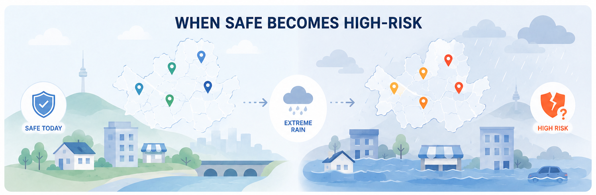
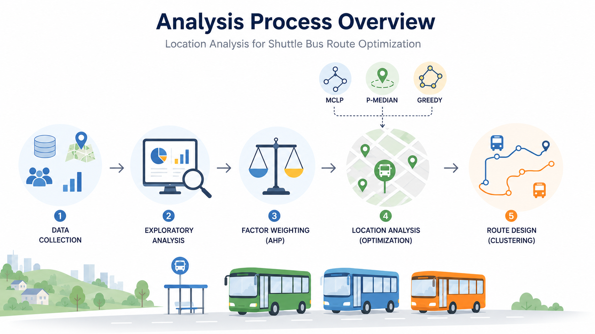

Frame
모호한 현실의 문제를 측정 가능한 분석 질문으로 구조화합니다.
DATA ANALYST · DATA SCIENTIST
데이터를 통해 사람과 비즈니스의 행동을 이해하고, 분석 결과를 실제 의사결정과 문제 해결로 연결합니다. 고객 행동, E-commerce, AI를 중심으로 데이터 분석과 연구를 이어가고 있습니다.
Customer Behavior
E-commerce Analytics
AI Agents · Human–AI Interaction
ABOUT
“I believe data has a story — and my job is to find it, understand it, and make it matter.”
그 생각은 교실에서 시작된 것이 아닙니다. 서울의 한 병원에서 임상 데이터를 수집하며 암 환자들을 직접 만났던 경험에서 시작됐습니다.
당시에는 정확한 데이터셋을 만드는 일에 집중했습니다. 하지만 이후 데이터를 다시 바라보면서, 한 행의 데이터가 단순한 기록이 아니라 한 사람의 경험과 치료 과정의 일부라는 사실을 체감했습니다.
그 이후 저는 분석 정확도만큼이나 데이터가 만들어진 현실의 맥락을 이해하는 것을 중요하게 생각하게 되었습니다. 고객 행동, 공간 분석, 의료 데이터, AI 인식 연구 등 서로 다른 주제를 다뤄왔지만, 공통적으로 현실의 문제를 분석 가능한 질문으로 바꾸고 결과를 다시 사람이 사용할 수 있는 의사결정과 서비스로 연결하는 데 관심을 두고 있습니다.
모호한 현실의 문제를 측정 가능한 분석 질문으로 구조화합니다.
데이터·통계·머신러닝·GIS 등 문제에 맞는 방법으로 패턴을 검증합니다.
분석 결과를 정책, 서비스, 운영 또는 비즈니스 의사결정으로 연결합니다.
TOOLS & METHODS
Python · SQL · R · SAS · pandas · NumPy
scikit-learn · XGBoost · K-Means · Hierarchical Clustering
BERTopic · SentenceTransformers · UMAP · HDBSCAN
Power BI · Tableau · Matplotlib
ArcGIS · QGIS · GeoPandas
AHP · MCLP · P-Median · Greedy Algorithm
RESEARCH / WORKING PAPERS
Working paper 단계의 연구는 공개 가능한 범위에서 문제, 분석 방향과 핵심 기여를 소개합니다.
클릭스트림과 구매 행동 데이터를 기반으로 신규 고객 리텐션, 로열 고객의 행동 패턴, 구매 및 이탈 가능성을 분석한 연구입니다.
Analysis completed · Manuscript in preparation
Generative, Agentic, Physical AI에 대한 뉴스와 커뮤니티 담론을 텍스트 마이닝으로 분석해 AI 유형별 가치와 이슈의 차이를 비교했습니다.
Analysis completed · Manuscript in preparation
SELECTED PROJECTS
카드를 누르면 프로젝트 상세 내용이 오른쪽 패널로 열립니다.

기후변화에 따른 지역별 홍수 위험을 재평가하고, 위험 분석을 보험요율과 보상 구조 설계까지 연결했습니다.

지역 축제의 교통 혼잡을 줄이기 위해 정류장 입지, 운행 권역과 노선을 데이터 기반으로 최적화했습니다.
건강검진·진료·의약품 데이터를 정리하고, 사용자가 건강 상태를 탐색할 수 있는 Power BI 대시보드를 제작했습니다.
EDUCATION & CERTIFICATIONS
Yonsei University · Graduate School of Information
Yonsei University
SQL Developer
Advanced Data Analytics Semi-Professional
AWARDS
상장으로 확인된 수상 이력을 최근 순으로 정리합니다.
한국디지털산업학회 · 한국스마트미디어학회
한국핀테크지원센터
한국지식경영학회
삼성화재 × POSTECH × 서울대학교
SK텔레콤
연세대학교 미래캠퍼스 SW중심대학사업단
(재)강원창조경제혁신센터
강원지역혁신플랫폼 디지털헬스케어사업단
CONFERENCE PRESENTATIONS
International Conference on IIARP–Glovento 2026
Kuala Lumpur, Malaysia · Online
CONTACT
데이터 분석, 고객 행동, E-commerce, AI 및 연구 프로젝트와 관련한 연락을 환영합니다.